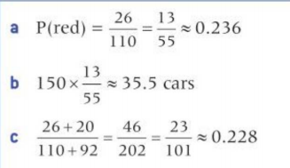
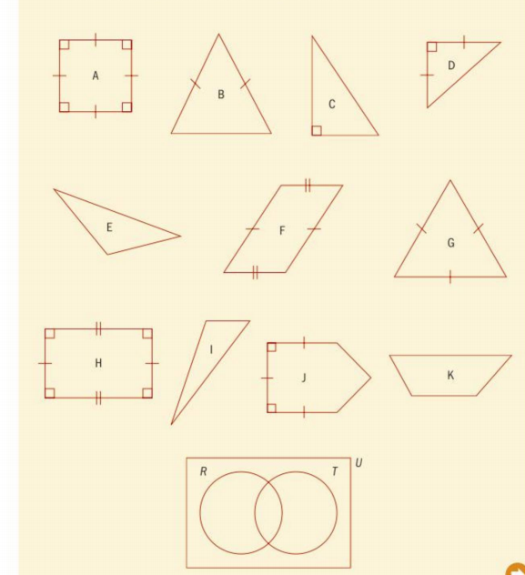
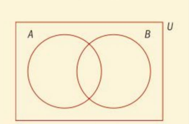
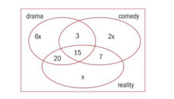

8
Cuantificar la aleatoriedad:
probabilidad
Usas el lenguaje de la probabilidad todo el tiempo:
- ¿Cuál es la probabilidad de que llueva mañana en
mi camino a la escuela
- ¿Qué tan probable cree que sea que pase su
examen de manejo en su próximo intento?
- ¿Cuál crees que es la probabilidad de que
ganará el juego esta tarde?
- ¿Estoy seguro de llegar a la escuela a tiempo si tomo el autobús en lugar de caminar?
La incertidumbre y la aleatoriedad ocurren en muchos aspectos de nuestra vida diaria. La toma de decisiones en el mundo de los negocios, la inversión, la agricultura y la industria, la atención médica y todos los aspectos de la vida real se basan en expectativas y predicciones. Tener un buen conocimiento de la probabilidad lo ayuda a comprender estas incertidumbres, comprender el riesgo y tomar mejores decisiones sobre el futuro.
Concepto
Representación
Cantidad
Microconceptos
Conceptos de ensayo, resultado, resultados igualmente probables, frecuencia relativa, espacio muestral (U) y evento
La probabilidad de un evento
Los eventos complementarios A y A '(notA)
Número esperado de ocurrencias
Eventos combinados
Eventos mutuamente excluyentes
Probabilidad condicional P
Probabilidades con y sin reemplazo
Eventos independientes
Uso de diagramas de Venn, diagramas de árbol, diagramas de espacio muestral y tablas de resultados para calcular probabilidades
¿Debería llevarme mi paraguas?
¿Debería tener más lecciones de manejo?
¿Qué transporte debo utilizar para asegurarme de llegar a tiempo a mi examen importante?
¿Deberíamos jugar con nuestro mejor equipo desde el principio?
El problema de Monty Hall es uno de los más famosos en probabilidad. Se basa en el programa de juegos estadounidense de los años 80 "Let's Make a Deal".
En el juego, los concursantes pueden elegir entre tres puertas. Detrás de una puerta hay un coche y detrás de las otras dos puertas hay cabras.
El concursante coge una puerta, que permanece cerrada por el momento. Monty Hall, el presentador, sabe lo que hay detrás de las puertas. Luego abre una de las puertas que tiene una cabra detrás.
Quedan ahora dos puertas. El concursante tiene entonces la opción de seguir con su elección original o cambiar a la puerta restante.
¿Qué deberían hacer ellos?
Quédese con su primera opción
Cambie a la puerta restante.
No importa. Las posibilidades son iguales.

Desarrollar habilidades de indagación
¿Qué otros tipos de juegos y situaciones de la vida real puedes utilizar la probabilidad para ayudarte a tomar decisiones?
Piense en las preguntas de este problema de apertura y responda las que pueda. A medida que avance en el capítulo, adquirirá conocimientos y habilidades matemáticas que le ayudarán a responderlas todas.
Antes de comenzar
Deberías saber cómo:
1.-Sumar, restar, multiplicar y dividir fracciones con y sin calculadora
2.- Sumar, restar, multiplicar y dividir decimales con y sin calculadora.
0.2+0.7=0.9
1-0.08=0.92
0.2*0.34=0.1*2*0.01*34
=0.001*68=0.068
3.-Calcule los porcentajes con y sin calculadora:
52% de 60=0.52*60=31.2
Verificación de habilidades
1.-Evaluar
2.-Evaluar
a.- 1-0.375
b.- 0.65+0.05
c.- 0.7*0.6
d.- 0.25*0.64
e.- 50% de 30
f.- 22% de 0.22
3.- Compruebe sus respuestas a las preguntas 1 y 2 con una calculadora.
353
8
CUANTIFICACIÓN DEL ALEATORIO: PROBABILIDAD
8.1.- Probabilidad teórica y experimental
Imagínese una fábrica que produce componentes eléctricos. Se sabe que algunos de los componentes producidos son defectuosos. ¿Qué tan probable es que un componente particular elegido al azar, digamos el componente A, sea defectuoso? ¿Cómo podríamos determinar esto?
El estudio de la probabilidad nos ayuda a comprender el grado de incertidumbre de algo que sucede.
Investigación 1
Todos los lunes a la hora del almuerzo, Andy y Bexultan juegan al ajedrez. Solo tienen tiempo para jugar solo dos juegos en su competencia regular a la hora del almuerzo
Andy es un poco mejor en el ajedrez que Bexultan. En el transcurso de un año escolar (36 semanas), ¿Andy ganará más competencias que Bexultan? Podemos simular esta situación con un dado.
Factual.-¿Qué es una simulación?
Supongamos que 1, 2, 3 y 4 corresponden a Andy ganando una partida de ajedrez, y 5 y 6 corresponden a Bexultan ganando una partida de ajedrez.
¿Por qué esta elección de resultados representa que Andy es mejor en el ajedrez que Bexultan?
¿Cuánto mejor es Andy que Bexultan en esta situación?
¿Qué otra opción de resultados también sugeriría que Andy es mejor que Bexultan?
¿Y si tuvieras un dado de 12 lados? ¿Qué combinaciones diferentes representarían a Andy mejor que Bexultan?
Primero investigaremos lo que sucede un lunes:
1.-Tira los dados. Un papel de 1, 2, 3 o 4 significa que Andy gana; un papel de 5 o 6 significa que Bexultan gana. Registre el resultado del primer juego en una hoja de resultados.
2.-Vuelva a lanzar los dados para ver quién gana el segundo juego y anótelo en la hoja de resultados.
| Número de competición |
Primera partida ganado por |
Segunda partida ganada por |
Ganador de la competición A(Andy),B(Bexultan), o D(Dibujar) |
| 1 |
|
|
|
| 2 |
|
|
|
| ..... |
|
|
|
| 36 |
|
|
|
3.- ¿Cuál fue el resultado de la primera competencia a la hora del almuerzo? Compare su resultado con otros en su clase. ¿Hay alguna sorpresa?
4.- Ahora repita el experimento 35 veces más, para obtener los resultados durante un año completo. ¿Le sorprenden sus resultados? ¿Cómo se comparan con lo que cabría esperar? ¿Qué jugador gana con más frecuencia? ¿Será este siempre el caso?
5.- ¿Con qué frecuencia esperaría que ganara cada jugador? ¿Con qué frecuencia esperaría un empate?
6.- ¿Cómo esperaría que cambiaran las respuestas a estas preguntas si usáramos 1, 2, 3, 4 y 5 para representar a Andy ganando? ¿Qué pasa si usamos un dado con un número diferente de lados?
7.- ¿Cómo podemos obtener una representación más precisa del modelo de Andy o Bexultan ganando?
8.-Concepto¿Cómo puede ser útil una simulación para hacer predicciones?
9.-Concepto¿Cómo podemos calcular un número esperado de ocurrencias?
354
8.1
En la investigación, consideramos la pregunta: "¿Andy ganará más competencias que Bexultan?" En esta y otras preguntas sencillas como "¿Lloverá hoy?" podemos expresar probabilidad usando palabras como "improbable", "probable", "imposible" y "cierto".
Para cada una de estas palabras, establezca un evento en relación con su día de hoy; por ejemplo, "Es probable que hoy reciba una lección de física" (¿es seguro?).
Un experimento de probabilidad (o simplemente un "experimento") es algo que tiene un resultado incierto. Un experimento o "prueba" es el proceso mediante el cual encontramos información sobre eventos mediante la recopilación de datos de manera cuidadosa.
Un evento es el resultado único de un experimento; por ejemplo:
Obtener cruz (experimento: lanzar una moneda)
Sacar un "5" (Experimento: lanzar un dado de seis caras)
Elegir un "Rey" (Experimento: elegir una carta de un mazo)
Obtener un "número par" (experimento: girar una ruleta numerada)
La probabilidad de que ocurra un evento se puede representar usando palabras, pero más útil es un valor de 0 a 1. En esta escala, 0 representa un evento imposible y 1 representa un evento que seguramente sucederá.
Imposible
Improbable
Incluso la oportunidad
Probable
Cierto
Escribimos P (A) para representar la probabilidad de que ocurra un evento A.
Por tanto, 0 P (A) 1.
Hay dos formas principales de encontrar la probabilidad de un evento:
1.-enfoque teórico de la probabilidad
2.-enfoque experimental de la probabilidad.
Planteamiento teórico
El enfoque teórico de la probabilidad se basa en una serie de eventos en los que se conoce la probabilidad de que ocurra cada evento.
Un dado limpio tiene seis lados numerados, todos los cuales tienen la misma probabilidad de ocurrir. La lista de posibles resultados igualmente probables es 1, 2, 3, 4, 5, 6.
El conjunto de todos los resultados de un experimento se denomina espacio muestral de ese experimento. Se denota por U. La notación n (U) muestra cuántos elementos del espacio muestral hay.
En este caso, escribiríamos n (U) = 6 ya que hay seis elementos del espacio muestral de tirar un dado de seis caras {1, 2, 3, 4, 5, 6). El espacio muestral de lanzar una moneda justa es {cara, cruz). El espacio muestral de elegir una carta de un paquete de cartas sería una lista de todas las cartas del paquete.
TOK
En este caso, se utiliza un modelo para representar una situación matemática. ¿De qué manera los modelos pueden ayudar u obstaculizar la búsqueda de conocimiento?
Insinuación
La probabilidad de un evento no puede ser mayor que 1. Puede escribir una probabilidad como decimal, fracción o porcentaje.
Mentalidad internacional
La teoría de la probabilidad se estudió por primera vez para aumentar las posibilidades de ganar al apostar. El primer trabajo sobre el tema fue del matemático italiano Girolamo Cardano en el siglo XVI.
355
8
CUANTIFICACIÓN DEL ALEATORIO: PROBABILIDAD
Ahora, definamos el evento A como "sacar un 6"
En este espacio muestral hay un 6, entonces n (A) = 1. Esto muestra que hay un 6 en el espacio muestral.
La probabilidad de obtener un 6 cuando lanza los dados una vez es, por lo tanto, uno de seis o 1/6
En notación de probabilidad,P(A)=n(A)/n(U)=1/6
Generalizando, esto nos da la probabilidad teórica de que cualquier evento A sea P(A)=n(A)/n(U), donde n(A) es la cantidad de formas en que puede ocurrir el evento A y
n (U) es el número total de resultados posibles.
Número esperado de ocurrencias
Entonces, si lanza un dado de seis caras seis veces, esperaría obtener un 6 una vez. Por 12 rollos, esperaríamos 12x1/6=2 sieses
Si la probabilidad de un evento es P, en n ensayos se esperaría que el evento ocurriera n x P veces.
Pero, ¿qué esperaríamos obtener por 10 rollos?
Aquí esperaríamos conseguir 10*1/6=5/3 seises.Claramente no es posible conseguir 5/3 seis, ¡pero es lo que cabría esperar! Revisaremos esta idea cuando analicemos las distribuciones de probabilidad en el capítulo 14.
Ejemplos
Se lanza un dado de 20 caras con cordones numerados del 1 al 20
El evento M se define como "el número obtenido es un múltiplo de 3".
a.-Determine P (M). Los dados se lanzan 100 veces.
b.-¿Cuántas veces esperaría obtener un múltiplo de 3?
Insinuación
Un poliedro de 20 lados se llama "icosaedro".
n(M)=6 y n(U)=20
Entonces P(M)=n(M)/n(U)=6/20=3/10=0.3
3/10*100=30
Hay 20 resultados posibles de los cuales 6 pertenecen a M {3, 6, 9, 12, 15, 18}.
Número esperado de ocurrencias = probabilidad x número de ensayos
356
8.1
Ejercitación 8A
1.-Calcula la probabilidad de elegir un número impar del conjunto de números {1, 2, 3, 4, 5, 6, 7, 8, 9, 10).
2.-Un concesionario de autos usados tiene 150 autos usados en su lote. El concesionario sabe que 30 de los coches están defectuosos. Uno de los 150 coches se selecciona al azar. ¿Cuál es la probabilidad de que esté defectuoso?
Insinuación
"Al azar" significa que cualquier automóvil tiene las mismas posibilidades de ser seleccionado. Uno de los 30 automóviles defectuosos tiene la misma probabilidad de ser elegido como uno de los que no lo son.
3.-Thys se ha inscrito para hacer una producción dramática en la escuela. Descubre que el director de producción asignará estudiantes al azar a los roles. Hay 20 lugares en el coro, 10 roles menores de habla y 5 roles principales de habla. ¿Cuál es la probabilidad de que Thys esté en el coro?
4.-Se lanza un dado octaédrico (de ocho lados). Las caras están numeradas del 1 al 8. Calcula la probabilidad de que el número arrojado sea:
a.-Un número par
b.-Un multiplo de 3
c.-Un multiplo de 4
d.-No un multiplo de 4
e.-Menos de 4
f.- un 9
5.-Cada letra de la palabra ESTADÍSTICAS está escrita en una tarjeta separada. Las 10 cartas se colocan boca abajo y se saca una carta al azar.¿Cuál es la probabilidad de elegir una carta con:
a.- La letra C
b.- La letra P
c.- Una vocal
6.-Una bolsa contiene 50 discos numerados del 1 al 50. Se selecciona un disco al azar. Encuentre la probabilidad de que el número en el disco:
a.-Un número par
b.- Tiene el dígito en él
7.-Una escuela tiene cinco autobuses para transportar estudiantes. Cuatro de ellos son minibuses con el mismo número de asientos y hay un autocar grande que tiene tres veces el número de asientos que un minibús. Un estudiante está asignado a un autobús. ¿Cuál es la probabilidad de que el alumno sea asignado al entrenador dado que los asientos se asignan al azar hasta que se llenan todos?
8.-Una ruleta tiene secciones de color rojo, azul, verde y amarillo. Las probabilidades de obtener un rojo y un azul se muestran en la tabla. La probabilidad de volverse verde es el doble que la de ponerse amarillo.
| Color |
Rojo |
Amarrillo |
Azul |
Verde |
| Frecuencia |
0.4 |
|
0.3 |
|
Calcula la probabilidad de volverse verde.
9.-En una gala de recaudación de fondos benéfica de la escuela, Sebastián decide comprar un boleto para la rifa. Hay 360 personas en la gala en total. La mitad de los asistentes a la gala compran boletos para la rifa. De los que compran boletos de rifa, la mitad compra dos boletos de rifa y el resto compra un boleto. Solo hay un ganador del sorteo. ¿Cuál es la probabilidad de que Sebastián gane?
TOK
Juega el juego de la paradoja de San Petersburgo y decide cuánto pagarías por jugar.
357
8
CUANTIFICACIÓN DEL ALEATORIO: PROBABILIDAD
Investigación 2
Un cuboctaedro es un poliedro con ocho caras triangulares y seis caras cuadradas. Se forma cortando triángulos equiláteros de la esquina de un cubo.
Es poco probable que tengas acceso a un cuboctaedro, pero es posible hacer uno usando una red como la que se muestra a la derecha.
Numere las caras cuadradas del 1 al 6 y las caras triangulares de? hasta 14
¿Cuál es la probabilidad de que cuando lances los dados la cara superior sea cuadrada? Como no se trata de un dado con lados del mismo tamaño, quizás no sea posible predecir basándose únicamente en la teoría. Deberá realizar un experimento
1.- Tira los dados 10 veces y registra los resultados. En tus 10 lanzamientos, ¿cuántas veces obtuviste una cara cuadrada y cuántas veces obtuviste una cara triangular?
Con base en estos resultados, calcule la probabilidad de obtener una cara cuadrada. P (cara cuadrada) = número de intentos en los que una cara cuadrada estaba en la parte superior / número total de rollos.
Por ejemplo, si tienes siete caras cuadradas en 10 rollos, esto daría una estimación de la probabilidad de obtener una cara cuadrada como 7/10=0.7.
Esto se llama la frecuencia relativa de obtener una cara cuadrada.
Frecuencia relativa=la relación entre el número de veces que ocurre un evento y el número de ocasiones en las que podría ocurrir en el mismo período.
2.- Repite el experimento rodando 10 veces más. ¿Cuál es la nueva estimación de la probabilidad de una cara cuadrada basada en 20 rollos? ¿Qué estimación de la probabilidad crees que es más precisa? ¿Por qué?
3.- Repita y calcule nuevamente después de cada 10 rollos y agregue sus hallazgos a una copia de la tabla a continuación. ¡Necesitarás tirar los dados varias veces! Vayamos a 100. Si hay otras personas en la clase, puede que desee combinar los resultados para hacerlo más rápido o para obtener aún más resultados.
| Número de rollos |
Número total de veces que una cara cuadrada está en la parte superior |
Estimación de la probabilidad de obtener una cara cuadrada en la parte superior (frecuencia relativa) |
| 10 |
|
|
| 20 |
|
|
| 30 |
|
|
| ... |
|
|
| 100 |
|
|
4.-¿Son las frecuencias relativas a corto plazo (las de 10 o 20 tiradas) las mismas que las probabilidades a largo plazo (las de 100 tiradas)?
5.-Pregunta conceptual ¿Por qué el número de ensayos de un experimento afecta la precisión de las predicciones?
6.- ¿Ha realizado suficientes pruebas aquí para obtener una buena estimación? ¿Cuál sería el problema de hacer más? ¿Cuándo deberías parar?
358
8.1
7.-Concepto.-¿Cuántos ensayos de un experimento antes de que podamos estar seguros de la probabilidad teórica?
También es posible representar su serie de estimaciones en un gráfico.
8.-Trace las frecuencias relativas que ha encontrado después de cada 10 vueltas. Puede hacer esto a mano o usando su GDC.
9.- Une los puntos del gráfico. ¿Que notaste?
10.-Factual¿Qué sucede con la frecuencia relativa de una cara cuadrada a medida que aumenta el número de rollos?
11.- Según tu experimento, ¿cuál es una buena estimación de la probabilidad de obtener una cara cuadrada en la parte superior? ¿Qué tan confiable es esto?
12.-Concepto¿Qué sucede con la frecuencia relativa a medida que aumenta el número de ensayos?
En probabilidad experimental, la probabilidad de un evento se basa en el resultado de una serie de ensayos. A medida que aumenta el número de ensayos, la probabilidad se acercará a la probabilidad real de que ocurra el evento. Este método puede ser útil cuando los resultados no son igualmente probables y, por lo tanto, se requiere una estimación.
Volvamos a la situación real de la fábrica que produce diferentes componentes eléctricos, donde se sabe que algunos de los componentes producidos son defectuosos. Queremos determinar la probabilidad de que un componente en particular, digamos el componente A, sea defectuoso, por lo que necesitamos probar algunos. (Claramente no podemos probarlos todos, de lo contrario no tendremos componentes para vender).
Si el primer componente probado es defectuoso, podríamos concluir que todos los componentes están defectuosos. Sin embargo, puede que éste no sea el caso. Si el segundo componente no está defectuoso, podríamos concluir que la probabilidad de que un componente sea defectuoso es 1/2 ya que (hasta ahora) la mitad (uno de cada dos) de todos los componentes están defectuosos.
Continuando con este proceso varias veces y calculando la relación:
El número de componentes defectuoso/El número de componentes probados=La frecuancia relativa del componente defectuosos
359
8
CUANTIFICACIÓN DEL ALEATORIO: PROBABILIDAD
Al igual que con la investigación de dados, a medida que aumenta el número de componentes probados, la frecuencia relativa se acercará más y más a la probabilidad real de que un componente sea defectuoso.
Puede utilizar la frecuencia relativa como una estimación de la probabilidad. Cuanto mayor sea el número de ensayos, más cercana es la frecuencia relativa a la probabilidad
Ejemplo 2
Los colores de los coches que pasan por la puerta de la escuela una mañana se dan en la tabla.
| Color |
Frecuencia |
| Rojo |
26 |
| Negro |
18 |
| Blanco |
20 |
| Verde |
12 |
| Amarrillo |
3 |
| Azul |
16 |
| Otros |
15 |
| Total |
110 |
a.- Estima la probabilidad de que el próximo automóvil que pase las puertas de la escuela sea rojo.
b.- Con esta información, si 150 autos pasaran por la puerta de la escuela al día siguiente, calcule la cantidad de autos rojos que se espera esa mañana.
El color de los coches también se registra al día siguiente. Los resultados se dan en la tabla.
| Color |
Frecuencia |
| Rojo |
20 |
| Negro |
21 |
| Blanco |
12 |
| Verde |
9 |
| Amarrillo |
4 |
| Azul |
16 |
| Otros |
10 |
| Total |
92 |
c.- ¿Cuál es una estimación mejorada de la probabilidad de que el próximo automóvil que pase por la puerta de la escuela sea rojo?

En realidad, no es posible tener una fracción de un automóvil, pero este es el número que se espera.
Número total de coches rojos en dos días / número total de coches en dos días.
Tok
Al ver una serie de crímenes, leer un libro o escuchar las noticias, la evidencia de ADN a menudo cierra un caso. Si fuera así de simple, no se necesitarían más detecciones o investigaciones. Investigue la "falacia del fiscal". ¿Cómo contrasta la razón con la emoción al tomar una decisión basada únicamente en la evidencia del ADN?
360
8.1
Ejercitación 8B
1.-La tabla muestra las frecuencias relativas de las edades de los estudiantes de una escuela secundaria.
| Años(Edad) |
Freacuencia relativa |
| 13 |
0.08 |
| 14 |
0.12 |
| 15 |
0.18 |
| 16 |
0.22 |
| 17 |
0.27 |
| 18 |
0.13 |
| Total |
1 |
a.-Un estudiante es seleccionado al azar de esta escuela. Encuentre la probabilidad de que:
i.-el estudiante tiene 15 años
ii.-La estudiante tiene 16 años de edad o más
Hay 1200 estudiantes en esta escuela.
b.-Calcula el número de estudiantes de 15 años en la escuela.
2.-Los lados de una ruleta de seis lados están numerados del 1 al 6. La tabla muestra los resultados de 100 giros.
| Número en ruleta |
1 |
2 |
3 |
4 |
5 |
6 |
| frecuancia |
27 |
18 |
17 |
15 |
16 |
7 |
a.-¿Cuál es la frecuencia relativa de obtener un 1?
b.-¿Crees que la ruleta es justa? Justifique su respuesta.
La ruleta se hace girar 3000 veces,
c.-Estima la cantidad de veces que el resultado será un 4.
3.-Un dado de ocho caras numerado del 1 al 8 se tira 80 veces para determinar si es justo.
a.-Si los dados son justos, ¿cuántos de cada número esperaría obtener?
Los resultados obtenidos fueron:
| Número de datos |
1 |
2 |
3 |
4 |
5 |
6 |
7 |
8 |
| Frecuancia |
8 |
8 |
12 |
11 |
11 |
12 |
11 |
7 |
| Frecuancia relativa |
|
|
|
|
|
|
|
|
b.-Copia y completa la tabla con la frecuencia relativa de cada uno de los posibles resultados. Da tus respuestas a 3 cifras significativas.
Los dados se tiran 320 veces más.
| Número de datos |
1 |
2 |
3 |
4 |
5 |
6 |
7 |
8 |
| Frecuancia relativa |
29 |
41 |
43 |
39 |
45 |
46 |
32 |
45 |
c.-Utilizando los datos combinados de las dos tablas, determine la frecuencia relativa para cada resultado posible.
d.-Concluya a partir de los datos si los dados son justos.
Mentalidad internacional
Chevalier de Mere, un conocido jugador francés, consultó a Blaise Pascal en París en 1650 con preguntas sobre algunos juegos de azar. Pascal comenzó a mantener correspondencia con su amigo Pierre Fermat acerca de estos problemas que iniciaron su estudio de probabilidad.
361
8
CUANTIFICACIÓN DEL ALEATORIO: PROBABILIDAD
En esta sección hemos considerado la probabilidad experimental y teórica. Utilice lo que ha aprendido para sugerir qué método sería mejor utilizar para predecir la probabilidad de:
a.-obtener una corrida de cinco caras en una moneda justa
b.-obtener una corrida de cinco caras en una moneda dañada
c.-lluvia mañana
d.-ganar la loteria
Reflejar¿Cómo se puede predecir la probabilidad de que ocurra un evento?
Desarrollar habilidades de indagación
Para encontrar una solución al problema de Monty Hall, puede intentar ejecutar una simulación en clase.
Necesitarás un compañero y tres tazas.
En su pareja, decidan cuál de ustedes será el anfitrión y cuál el concursante. El anfitrión debe colocar un objeto debajo de una de las tazas mientras la segunda persona (el concursante) cierra los ojos.
Cuando esté listo, el concursante debe elegir una taza, pero no levantarla.
Luego, el anfitrión levanta uno de los otros dos vasos que está vacío.
El concursante cambia o no cambia su elección de copa
Registre si el jugador ha ganado o perdido
Calcule el porcentaje de ganancias por cambiar y el porcentaje de ganancias por no cambiar
¿Cuál es la mejor estrategia?
|
Cambiar |
No cambiar |
| Número de victorias |
|
|
| Número de perdidas |
|
|
| Porcentaje de ganancia (%) |
|
|
¿Cuáles son sus resultados sugieren que la probabilidad de ganar es si cambia o no cambia?
¿Cuántos ensayos cree que serán necesarios para que esta simulación obtenga resultados más fiables?
¿Cuándo sabrá cuándo ha hecho lo suficiente?
También es posible utilizar un simulador en línea para este problema. Hay muchos disponibles si los busca. Aquí hay uno http://www.mathwarehouse.com/monty-hall-simulation-online/. Alternativamente, puede escribir un programa para una hoja de cálculo o un código para hacer lo mismo.
¿Cuál es la ventaja de ejecutar una simulación utilizando tecnología?
362
8.2
8.2.- Representar probabilidades: diagramas de Venn y espacios muestrales
Investigación 3
Las formas deben clasificarse en dos conjuntos, R y T. Sea R el conjunto de formas que contienen un ángulo recto y T el conjunto de formas con tres lados
1.-¿A qué conjunto pertenecería el siguiente?
a.- Cuadrado
b.- Pentagono regular
c.- Triangulo isoseles
d.- Triangulo rectagunlo
¿Qué notaste?
Ordena las siguientes formas en el diagrama a continuación.

363
8
CUANTIFICACIÓN DEL ALEATORIO: PROBABILIDAD
4.-Dibuja otra forma que pertenezca a:
a.- establecer R pero no establecer T
b.- ni establecer R ni T
c.- ambos conjuntos
5.-¿Dónde pertenece cada una de estas formas en el diagrama?
Este diagrama se llama diagrama de Venn. Un diagrama de Venn es un diagrama que muestra la relación entre una colección finita de conjuntos.
6.-Si se elige una forma al azar del conjunto de formas al comienzo de esta investigación, ¿cuál es la probabilidad de que esté en ambos conjuntos R y T?
7.-Concepto¿Para qué son útiles los diagramas de Venn?
Intente definir los conjuntos A, B y C de manera que todas las regiones (indicadas por *) tengan algunos miembros.
Quizás podría intentar usar datos de su salón de clases o escuela. Por ejemplo, ¿funciona lo siguiente para su salón de clases?
A = estudiantes que toman biología
B = estudiantes que toman química
C = estudiantes que toman ESS
Tenga en cuenta que en este ejemplo nadie toma tanto biología como ESS
Dibujar diagramas de Venn
Para dibujar un diagrama de Venn, primero dibuje un rectángulo que contendrá todos los elementos que desee considerar. Dado que contiene todos los elementos, nos referimos a él como el conjunto universal y se denota por U.
Las regiones encerradas dentro del rectángulo se utilizan para representar diferentes conjuntos.
Diagramas de Venn, complementos, intersecciones y uniones
Diagramas de Venn, complementos, intersecciones y uniones Hay 100 estudiantes en un grupo de un año. Escribe n (U) = 100, y el rectángulo ahora representa a estos 100 estudiantes.
Dentro del grupo anual, 36 estudiantes estudian arte.
TOK
En TdC puede resultar útil establecer una distinción entre conocimiento compartido y conocimiento personal. El IB utiliza un diagrama de Venn para representar estos dos tipos de conocimiento. Si piensa en matemáticas (o en cualquier tema, de hecho), ¿qué podría ir en las tres regiones ilustradas en el diagrama?
364
8.2
Francis y Hannah son dos de los estudiantes que estudian arte, y Grant e Iona son dos estudiantes que no estudian arte. En el siguiente diagrama, ¿dónde colocaría a Francis, Grant, Hannah e Iona?
Dentro del círculo hay 36 personas. ¡No es necesario que nombre a cada estudiante!
Se elige un estudiante al azar del grupo de un año.
¿Cuál es la probabilidad de que el estudiante estudie arte?
La probabilidad de que un estudiante haga arte se escribe como P (A)
Aqui P(A)=36/100=9/25
¿Qué representa la región fuera del conjunto A (pero aún dentro del espacio muestral U)?
¿Qué sabe sobre los estudiantes de esta región?
¿Cuántos estudiantes hay en esta región?
Este es A ', el complemento del conjunto A, y representa a aquellos estudiantes que no estudian arte.
Entonces n (A ') = n (U) - n (A)
En este ejemplo n (A ') = 100 - 36 = 64.
¿Cuál es la probabilidad de que un estudiante elegido del grupo de un año no estudie arte?
Requerimos P (A ')
P(A´)=n(A´)/n(U)=64/100=16/25
¿Qué notas acerca de P (A) + P (A ')? ¿Por qué es este el caso?
Entonces P(A´)+P(A´)=9/25+16/25=1
En general, si considera el evento A y su complemento A ', entonces
P(A') + P(A) = 1
y
P(A') = 1 -P(A).
Intersecciones de Eventos
Si 40 estudiantes estudian biología y, de ellos, 12 estudiantes estudian arte y biología, ¿cómo se puede representar esto en el diagrama de Venn? Puede agregar otra región, B, al diagrama de Venn para representar a los estudiantes que estudian biología.
Los 12 estudiantes que estudian arte y biología se ubican en la intersección de A y B.
Esta región se escribe como A n B y está representada por el área sombreada.
365
8
CUANTIFICACIÓN DEL ALEATORIO: PROBABILIDAD
Había 100 - 24 - 28 - 12 = 36 estudiantes que no estudian arte ni biología. Estos van por fuera de los círculos.
El diagrama de Venn ahora se puede utilizar para responder preguntas de probabilidad relativas a los 100 estudiantes.
Por ejemplo, ¿cuál es la probabilidad de que un estudiante elegido al azar estudie arte y biología? P (A ∩ B)
Aqui P(A ∩ B)/n(U)=12/100=3/25
¿Cuál es la probabilidad de que un estudiante elegido al azar no estudie biología pero estudie arte?
Esto se escribe P (A ∩ B ').
Aqui,P(A ∩ B´)=n(A ∩ B´)/m(U)=24/100=6/25
¿Qué representa A '∩ B'?
Esta es la intersección de aquellos estudiantes que no hacen arte y no hacen biología.
¿Dónde está esta región en el diagrama de Venn?
En este caso, n (A '∩ B') = 36.
Unión de eventos
La probabilidad de que un estudiante elegido al azar haga arte o biología se escribe P (A U B).
Reflejar¿Qué significan "y" y "o" en matemáticas? ¿En qué se diferencian del uso habitual en inglés (inclusivo y exclusivo o)?
En matemáticas, "o" incluye la posibilidad de "ambos". Así que "A o B" significa "en A o en B" o "en A y B". Esto se conoce como "inclusivo o".
En otros contextos, podríamos usar el "exclusivo o". Por ejemplo, la pregunta "¿Quieres una bebida o un bocadillo?" no invita a la posibilidad de "ambos".
El área P {A U B) está sombreada en este diagrama de Venn.
De nuestro diagrama de Venn n (A U B) = 24 + 12 + 28 = 64.
Y por lo tanto P(A U B)=n(A U B)/n(U)=64/100=16/25
¿Qué representa A U B?
Esto son todos aquellos estudiantes que estudian arte o no estudian biología
Aquí n (A U b ') = 24 + 12 + 36 = 72
y P(A U B´)=n(A U B´)/n(U)=72/100=18/25
366
8.2
Ejemplo 3
En un grupo de 50 personas, a 29 les gusta comer pescado (F) ya 38 les gusta comer patatas fritas (C) y a 9 personas no les gusta ni el pescado ni las patatas fritas. ¿A cuántos les gusta el pescado y las patatas fritas?
1.-Dibuja un diagrama de Venn para mostrar esta información.
2.-Usa tu diagrama para encontrar la probabilidad de que le guste a una persona elegida al azar del grupo:
a.-papas fritas
b.-tanto pescado como patatas fritas
c.-pescado pero no patatas fritas.
3.-
a.-Describe con palabras a las personas del conjunto F U
Find n(F U C´)
1.-Dado F=pescado
C=Papas fritas
Dado x=n(F ∩ C´)
n(F ∩ C´)=29-x
n(F ∩ C´)=38-x
F´ U C son esas personas a las que no les gusta el pescado o les gustan las patatas fritas
d.-n(F ∩ C´)=12+9+26=47
primero define tus conjuntos
no conoces a muchos como el pescado y las patatas fritas, así que usemos x para este valor
las cuatro regiones del diagrama forman el ser universal U y, por lo tanto, todas deben sumar para dar 50
Resolver para x
Sustituir x=26 para obtener el número en cada sección del diagrama
367
8
CUANTIFICACIÓN DEL ALEATORIO: PROBABILIDAD
Ejercitación 8C
1.-En un grupo de 38 estudiantes, 29 juegan juegos de computadora, 10 juegan juegos de mesa y 9 juegan ambos
a.-Dibuja un diagrama de Venn para representar esta situación.
Un estudiante es seleccionado al azar.(masculino)
b.-Encuentre la probabilidad de que el estudiante no juegue ni juegos de computadora ni juegos de mesa.
2.-En un club deportivo, 40 miembros juegan al bádminton, 37 miembros juegan al squash, 21 juegan a ambos y 7 no juegan a ninguno.
a.-Represente esta información en un diagrama de Venn
b.-Determine cuántas personas son miembros del club,
c.-Determine la probabilidad de que un miembro:
i.-juega bádminton
ii.-juega ambos deportes
iii.-no juega ningún deporte
iv.-juega al menos un deporte.
3.-Se preguntó a un grupo de 50 personas si le dieron a su pareja una tarjeta o un regalo en su último cumpleaños. Los resultados fueron: 31 dieron una tarjeta, 40 dieron un regalo y 25 dieron tanto una tarjeta como un regalo. Si una de las personas fue elegida al azar, determine la probabilidad de que haya dado:
a.-una tarjeta o un regalo
b.-una tarjeta pero no un regalo
c.-ni una tarjeta ni un regalo
4.-El conjunto A contiene las letras necesarias para deletrear la palabra PROBABILIDAD y el conjunto B contiene las letras necesarias para deletrear la palabra COMPLEMENTARIO.
a.-Dibuja un diagrama de Venn para los dos conjuntos A y B.
b.-¿Qué hay en la intersección de A y B?
c.-¿Qué hay en la unión de A y B?
5.-Si U = {1, 2, 3, 4, 5, 6, 7, 8, 9, 10), A = {2, 4, 6, 8,10} y B = {3, 6, 9}, enumere los miembros de los siguientes conjuntos:
6.-El conjunto universal U se define como el conjunto de números enteros positivos menores o iguales a 15.
M es el conjunto de números enteros que están en el conjunto U y son múltiplos de 3.
F es el conjunto de números enteros que están en el conjunto U y son factores de 30.
a.-Enumere los elementos de
i.-M
ii.-F
b.-Coloque los elementos de M y F en las regiones apropiadas de un diagrama de Venn
c.-Se elige un número al azar de U. Calcula la probabilidad de que el número sea:
i.-tanto un múltiplo de 3 como un factor de 30
ii.-ni un múltiplo de 3 ni un factor de 30.
7.-En una ciudad, el 10% de la población ve las noticias a la 1 pm, el 30% de la gente ve las noticias a las 6 pm y el 40% ve las noticias a las 9 pm.
Se encontró que el 5% ve a las 6 pm y las 9 pm, el 4% ve a la 1 pm y a las 9 pm, el 3% ve a la 1 pm y a las 6 pm, y el 2% ve los tres programas de noticias.
a.-Complete un diagrama de Venn para mostrar esta información. Para este diagrama de Venn, necesitará tres círculos, uno por cada vez que se emiten las noticias.
b.-Encuentre la probabilidad de que una persona elegida al azar de la ciudad:
i.-mira solo las noticias a las 9 pm
ii.-mira solo las noticias a las 6 pm
iii.-no ve las noticias.
368
8.2
La regla de la suma
Investigación 4
Volvamos al diagrama de Venn de los estudiantes de arte y biología.
1.-Escriba las siguientes probabilidades nuevamente:
P(A),P(B),P(A n B) y P(A U B).
2.-Explique por qué la probabilidad de que un estudiante elegido al azar que estudie arte y biología, P (A U B), no sea igual a la probabilidad de que un estudiante estudie arte más la probabilidad de que un estudiante estudie biología, P (A) + P (B).
3.-FactualUtilice los valores de P (A), P (B), P (A n B) y P (A u B) para determinar la regla correcta para P (AUB) en términos de P (^ 4), P (B) y P (AnB).
4.-Explica esta regla usando diagramas de Venn
5.-Concepto¿Por qué podrían ser útiles reglas como ésta?
La regla de la suma establece que P (A u B) = P (v4) + P (B) - P (A ∩ B).
Ejemplo 4
A y B son dos eventos tales que P (A) = 9/20 y P(B)=3/10.Se sabe que P (A U B)=2P(A n B)
Encuentre
a.- P(A U B)
b.- P(A U B)`
c.- P(A n B`)
Usa P(A U B)=P(A)+P(B)-p(B)-P(A n B)
Desde P(A U B)=2P(A n B)
Desde P(A´)=1-P(A)
Usando el resultado de la parte a
369
8
CUANTIFICACIÓN DEL ALEATORIO: PROBABILIDAD
En algunos de los ejemplos anteriores, la pregunta podría haberse respondido utilizando solo el diagrama de Venn.
Reflejar¿Cuándo podría ser más apropiado una fórmula o un diagrama? ¿Cuál es el método más eficaz? ¿Qué entendemos aquí por eficiente?
En las siguientes preguntas, considere si usar la fórmula o un diagrama (o quizás una combinación de ambos).
TOK.-¿La ética juega un papel en el uso de las matemáticas?
Insinuación
La probabilidad, P (A) y la probabilidad P (B) incluyen cada una la probabilidad de ambos / landB, P (A n B). Para P (A u B) solo deseamos incluir esta probabilidad una vez, por lo que restamos una de estas probabilidades.
Ejecitación 8D
1.- Se lanza un dado de diez caras, numerados del 1 al 10. Calcule la probabilidad de que:
a.- El número obtenido es un número primo
b.- El número obtenido es un número primo o un múltiplo de 3.
c.- El número obtenido es múltiplo de 3 o múltiplo de 4.
2.- En un grupo de 55 turistas, 30 tienen cámaras, 25 son mujeres y 18 son mujeres con cámaras. Calcule la probabilidad de que un turista elegido al azar de este grupo sea el propietario de una cámara o una mujer
3.- Se elige una letra al azar del alfabeto inglés de 26 letras. Calcula la probabilidad de que la letra sea:
a.-En la palabra MATEMATICA
b.-En la palabra TRIGONOMETRIA
c.-En la palabra MATEMATICAS y la palabra TRIGONOMETRIA
d.-En la palabra MATEMATICAS o la palabra TRIGONOMETRIA
4.- Arnav va a la biblioteca. La probabilidad de que saque un libro de ficción es 0.4, un libro de no ficción es 0.3 y tanto un libro de ficción como uno de no ficción es 0.2.
a.-¿Cuál es la probabilidad de que Arnav saque un libro de ficción, un libro de no ficción o ambos?
b.-¿Cuál es la probabilidad de que Arnav no lea un libro?
5.- Si X e Y son dos eventos tales que P(X)=1/4 y P(Y)=1/8 y p(X n Y)=1/8´.Encuentre
a.-P(X U Y)
b.-P(X U Y)´
6.- Si P(A)=0.2 y P(B)=0.4 y p(A n B)=0.5, Encuentre
a.- P(A n B)
b.- P(A´ U B)
7.- A y B son dos eventos tales que P (A) =3/16 y P(B)=3/8 y se sabe que 8 P(A U B)=3P(A n B).Encontrar
a.- P(A U B)
b.- P(A U B)´
c.- P(A n B´)
Eventos mutuamente excluyentes
De los 100 estudiantes, se encuentra que 28 estudiantes estudian química. No es posible estudiar química y arte porque las clases son al mismo tiempo.
Se dice que los eventos A, que estudia arte, y C, que estudia química, son eventos mutuamente excluyentes.
370
8.2
Los eventos mutuamente excluyentes (o disjuntos) son eventos cuyos resultados no pueden ocurrir al mismo tiempo
En general, si dos eventos A y B son mutuamente excluyentes, entonces se sigue que P (A n B) = 0 y la regla de la suma en estos casos P (A u B) = P (A) + P (B).
Los eventos mutuamente excluyentes no se cruzan si se representan en un diagrama de Venn.
Ejemplo 5
Arthur tiene un cajón que contiene corbatas. Coge una corbata al azar del cajón. La probabilidad de que la corbata sea azul es 5/12 y la probabilidad de que sea rojo es 1/3
¿Cuál es la probabilidad de que Arthur elija una corbata que no es ni roja ni azul?
Dado B= corbata azul seleccionada
R=corbata roja seleccionada
P(B U R)=P(B)+P(R)=5/12+1/3=9/12=3/4
P(B U R)´=1-p(B U R)=1-3/4=1/4
Primero define tus conjuntos
B y R son mutuamente excluyentes ya que no puede seleccionar una corbata roja y azul a la vez.
Desde P(A´)=1-P(A)
Ejercitacion 8E
1.-Estos son algunos eventos relacionados con el lanzamiento de dos dados:
R: Ambos dados muestran un 4.
B: El total es 7 o más.
C: Hay al menos un 6.
D: Los dos dados muestran el mismo número.
E: Ambos dados son impares.
¿Cuáles de estos pares de eventos son mutuamente excluyentes?
a.-A y B
b.-A y C
c.-A y D
d.-A y E
e.-B y E
f.-C y D
g.-B y C
2.- 2 eventos N y M tales que P(N)=1/5 y P(M)=1/10 y P(N U M)=3/10. son N y M mutuamente excluyentes
3.- En un cuestionario entre escuelas, la probabilidad de que la escuela A gane la competencia es 1/3,la probalidad de que gane la escula b es 1/4 y la probabilidad de que gane la escula C es de 1/5.Encuntra la probalidad que
a.-A o B ganan la competencia
b.-A,B o C ganan la competencia
c.-¿Hay otras escuelas en la competencia? ¿Cómo lo sabes?
371
8
CUANTIFICACIÓN DEL ALEATORIO: PROBABILIDAD
Representar resultados: diagramas de espacio muestral
Investigación 5
Considere esta serie de tres problemas diferentes.
Primer problema
En un grupo de 12 personas, una persona juega tiro con arco y bádminton, dos personas solo tiro con arco y siete personas hacen bádminton
Calcula la probabilidad de que una persona elegida al azar solo juegue bádminton.
1.-Primero represente esta información en un diagrama de Venn. Esto es similar a las preguntas que hemos abordado anteriormente.
2.-A continuación, copie y complete la siguiente tabla con la misma información. En cada espacio ponga el número de personas representadas.

|
Tiro al arco |
No tiro con arco |
Total |
| Badmiton |
1 |
|
|
| No Badminton |
|
|
|
| Total |
|
|
|
Esto se llama tabla de dos factores (o tabla de contingencia).
3.-Ahora responde la pregunta: Encuentra la probabilidad de que una persona elegida al azar solo juegue bádminton.
4.-En su opinión, ¿cuál de estos dos métodos de representar a los 12 estudiantes en el espacio muestral, diagrama de Venn o tabla de contingencia, es preferible? ¿Por qué?
Segundo problema
¿Cuál es la probabilidad de obtener menos de 6 cuando se lanzan dos dados justos de seis caras?
Para responder a esta pregunta, necesitamos saber cuántos resultados posibles hay
Un posible resultado es un 3 en el primer dado y un 5 en el segundo dado. Podríamos representar esto como (3,5)
1.-Enumere todos los posibles resultados. ¿Cuántos resultados hay?
2.-¿Cuál es el problema de enumerar los resultados? (¡Piense si tuviera un dado con muchos lados!
Otra forma de representar esta información es en un diagrama de espacio muestral, también llamado diagrama de espacio de probabilidad. Un 3 en el primer dado y un 5 en el segundo dado se representa así:
| dado 2 |
dado 2 |
dado 2 |
dado 2 |
dado 2 |
dado 2 |
dado 2 |
dado 2 |
| dado 1 |
|
1 |
2 |
3 |
4 |
5 |
6 |
| dado 1 |
1 |
|
|
|
|
|
|
| dado 1 |
2 |
|
|
|
|
|
|
| dado 1 |
3 |
|
|
|
|
(3,5) |
|
| dado 1 |
4 |
|
|
|
|
|
|
| dado 1 |
5 |
|
|
|
|
|
|
| dado 1 |
6 |
|
|
|
|
|
|
3.-Copia y completa el diagrama. Resalte todas las formas de obtener una puntuación total de menos de 6
4.-Ahora responde la pregunta: ¿Cuál es la probabilidad de obtener menos de 6 cuando se lanzan dos dados de seis caras?
5.-¿Cuál es la ventaja de un diagrama de espacio muestral sobre la lista de resultados?
6.-¿Cuándo podría ser más adecuada una lista de resultados que un diagrama de espacio muestral?
372
8.2
Tercer problema
Se hace girar tres veces una ruleta justa con los números 1, 2, 3
Encuentre la probabilidad de que el puntaje en el último giro sea mayor que el puntaje en los dos primeros giros.
1.-¿Podría representar la misma información en un diagrama de Venn o una tabla de contingencia? Seria de ayuda¿aquí
2.-Enumere todos los posibles resultados de este experimento.
3.-¿Cuántos resultados posibles hay?
Al enumerar todos los resultados, debe ser sistemático para no perderse ninguno.
4.-Encierre en un círculo aquellos conjuntos de resultados en su lista en los que el último giro es mayor que las puntuaciones de los dos primerosgiros. ¿Cuántos hay?
5.-¿Cómo se vería el diagrama de espacio de probabilidad en este problema?
6.-¿Por qué no dibujamos aquí un diagrama de espacio muestral?
7.-Ahora responda la pregunta: Encuentre la probabilidad de que la puntuación en el último giro sea mayor que las puntuacionesen los dos primeros giros.
8.-¿Cuáles son las diferentes formas en que se pueden representar los espacios muestrales?
Ejemplo 6
En un experimento, se lanza una moneda y se lanza un dado de seis caras.
a.- Haz un diagrama de espacio muestral para este experimento.
b.- Encuentre la probabilidad de que en un solo experimento obtenga una cabeza y un número menor que3 en los dados.

P (cabeza y número menos de 3)=2/12=1/6
Los resultados que dan cabeza yse resaltan los números inferiores a 3.
Ejercitación 8F
1.-Se lanzan tres monedas insesgadas una a latiempo y se anotan los resultados. Uno posibleEl resultado es que las tres monedas son caras.Esto está escrito HHH. Otro es que ellas dos primeras monedas son caras y la última esuna cola. Esto se escribe HHT.Enumere el espacio muestral completo para esteexperimento aleatorio
Encuentre la probabilidad de que:
a.-El número de cabezas es mayor que elnúmero de colas.
b.-Se lanzan al menos dos carasconsecutivamente.
c.-La cara y la cruz se lanzan alternativamente.
373
8
CUANTIFICACIÓN DEL ALEATORIO: PROBABILIDAD
2.-Dos dados tetraédricos, uno azul y elotros rojos, están numerados del 1 al 4. Losse lanzan dos dados y se anotan los resultados,
a.-Dibuja un diagrama de espacio muestral para esteexperimentar.
b.-Encuentre la probabilidad de que:
i.-el número en los dados rojos es mayorque el número en los dados azules
ii.-la diferencia entre los númerosde los dados es 1
iii.-el dado rojo muestra un número impar yel dado azul muestra un número par
iv.-a suma de los números en los dados esun número primo.
3.-Una caja contiene tres tarjetas con elnúmeros 1,2, 3. Un segundo cuadro contienecuatro cartas con los números 2, 3, 4, 5. ALa tarjeta se elige al azar de cada caja.
a.-Dibuje el diagrama del espacio muestral paraexperimentar.
b.-Encuentre la probabilidad de que:
i.-las tarjetas tienen el mismo número.
ii.-el mayor de los dos números extraídoses un 3
iii.-la suma de los dos números en ella tarjeta es menor que 7
iv.-el producto de los números en eltarjeta es al menos 8
v.-se elige al menos un número par.
4.- Toby juega un juego con un dado llamado "Veny ve".
Tira los dados. Si la puntuación es 1,avanza 1 m. Si la puntuación es 2,se mueve a la derecha 1 m. Si la puntuación es 3, se muevehacia atrás 1 m. Si la puntuación es 4 se mueveizquierda 1 m. Si la puntuación es de 5 o 6 se quedadonde está.
Toby lanza los dados dos veces. Cuál es elprobabilidad de que sea:
a.-en el mismo punto donde empezó
b.-exactamente a 2 m de su partidapunto
c.-más de uno pero menos de 2 m de distanciadesde su punto de partida.
Desarrollar habilidades de indagación
Problema de Monty Hall: enumerar la solución del espacio muestral
Si volvemos al problema de Monty Hall, ¿puede alguno de estos¿Se utilizarán métodos de representación de espacios muestrales?Copie y complete la siguiente tabla para todos los posiblesresultados.
| Concursanteelige |
Premiopuerta |
Puerta Montyabre |
Resultado sipermanecer |
Resultado sicambiar |
| 1 |
3 |
2 |
Perder |
Ganar |
| 1 |
2 |
3 |
Perder |
Ganar |
| 1 |
1 |
2 o3 |
Ganar |
Perder |
| 2 |
3 |
1 |
Perder |
Ganar |
| ... |
... |
... |
... |
... |
¿Cuántas opciones diferentes hay en total?
¿En cuántas de estas opciones gana el premio cuando cambia?
¿En cuántos de ellos gana un premio si no cambia?
¿Cuál es la probabilidad de ganar un premio si cambia?
¿Cuál es la probabilidad de ganar un premio si no cambia?
¿Deberías cambiarte o quedarte?
374
8.3
8.3 Independiente y dependiente eventos y condicional probabilidad
Regla de producto para eventos independientes
Investigación 6
Considere el ejemplo de un dado y una moneda lanzada en lasección.
Aquí está el diagrama de espacio muestral para los dados y la moneda nuevamente:

1.-Copia el diagrama
2.-¿Cuántos resultados posibles hay?
3.-Sombree todos los resultados que determinan la probabilidad de H, obteniendo uncabeza. ¿Qué es P (H)?
4.-En un color diferente, sombree todos los resultados que determinan la probabilidadde L, obteniendo una puntuación de menos de 6. ¿Qué es P (L)?
5.-¿Cuál es la probabilidad de obtener una cara y una puntuación menor que 6? Cualparte del diagrama representa esta probabilidad? ¿Qué es ? {H n L) ?
6.-Mira tus respuestas. ¿Cuál es la conexión entre P (H), P (L) yP (HnL)?
7.-Al realizar este experimento, ¿el resultado de obtener una cabezaafectar el resultado de obtener una puntuación de menos de 3?
Dos eventos A y B son independientes si la ocurrencia de uno no afectala posibilidad de que ocurra el otro.
Escribe una regla para encontrar P (A n B) si A y B son eventos independientes.
Esto se llama regla del producto o regla de multiplicación paraeventos. Esta regla también se puede utilizar para probar si dos eventos sonindependiente
Si A y B son eventos independientes, entonces P (/ 4 n £) = P (> 4) x P (B).
Mentalidad internacional
A mediados del siglo XVII,matemáticosBlaise Pascal, Pierrede Fermat y AntoineGombaud desconcertadoeste simple juego de azarproblema:Cuál es más probable:rodando al menos uno seisen cuatro tiros de unodados o tirando al menosuno doble seis en 24lanza con dos dados?
Insinuación
En esta investigación,el espacio muestraldiagrama ayudó avisualizar el númerode posibles resultadosen la intersección,pero no siempre esnecesario. Puede queser apropiado para soloaplicamos la regla si nosotrossé que / ly Bareeventos independientes.
375
8
CUANTIFICACIÓN DEL ALEATORIO: PROBABILIDAD
Ejemplo 7
Una bolsa contiene tres bolas rojas y dos bolas blancas. Otra bolsa contiene una bola roja.y cuatro bolas blancas. Se selecciona una bola al azar de cada bolsa. Encuentre la probabilidad de que:
a.- Ambas bolas son rojas b.- Las bolas son de diferentes colores c.- Al menos una bola es blanca.
a.-Desde la primera bolsa P(R)=3/5
Desde la segunda bolsa P(R)=1/5
Por lo tanto,P(R n R)=3/5*1/5=3/25
b.-Desde la primera bolsa P(R)=3/5
Desde la segunda bolsa P(W)=4/5
Por lo tanto,P(W U R)=3/5*4/5=12/25
Desde la primera bolsa P(W)=2/5
Desde la segunda bolsa P(R)=1/5
Por lo tanto P(W n R=2/5*1/5=2/25)
P(R n W)+P(W n R)=12/25+2/25=14/25
P(direfentes colores)
P(R n W)+P(W n R)=12/25=14/25
P(al menos uno blanco)=1-p(Ambos rojos)
=1-P(R n R)
=1-3/25=22/25
Los eventos "escogiendo un rojo del primerobolsa " (R j) y" recogiendo un rojo delsegunda bolsa "( R ,) son eventos independientes.
P(R n R)=P(R)*P(R)
Si las bolas son de diferentes colores, entonceso el primero es rojo y el segundouno es blanco o el primero es blanco yel segundo es rojo
Estos son eventos mutuamente excluyentes.
Nos podríamos calcular la probabilidad de queambos son blancos, la probabilidad de que el primeroes blanco y el segundo es rojo, y elprobabilidad el primero es rojo y el segundoes mientras y súmalos.
o
Si al menos uno es blanco, significa queambos no pueden ser rojos.
Ejercitación 8G
1.-El guardarropa de Erland contiene cincocamisas: una azul, una marrón, unablanco, uno negro y uno morado.Él mete la mano en el armario yelige una camisa sin mirar.Reemplaza esta camisa y eligede nuevo. ¿Cuál es la probabilidad Erlandelige la camisa morada en ambas ocasiones?
2.-Una escuela grande realiza una encuestade la comida proporcionada por la escuela cafetería. Se encuentra que - del 4/5 a los estudiantes les gusta la pasta. Tres estudiantesse eligen al azar. Cuál es elprobabilidad de que los tres estudiantescomo la pasta?
TOK
Piensas quélas matemáticas sonuna forma útil demedir riesgos?
En que medidahacer emoción yla fe juega un papel en¿tomar riesgos?
376
8.3
3.-Millie está jugando en un partido de cricket yun partido de hockey el fin de semana. losprobabilidad de que su equipo gane elpartido de cricket es 0,75 y la probabilidad desu equipo que gana el partido de hockey es de 0,85.¿Cuál es la probabilidad de que el equipo de Milliespierde ambos partidos?
4.-Tres eventos A, B y C son tales que A y B son mutuamente excluyentes y P(A)=0.2, P(C)=0.3, P(A U B)=0.4 y P(B U C)=0.34
a.-Calcular P(B) y P(A U B)
b.-Determine si B y C sonindependiente.
5.-Muamar lanza una moneda y lanza una moneda de seis caras.dado. Encuentre la probabilidad de que Muamar obtengauna cara en la moneda, y no obtiene un 6 enel dado.
6.-Un misil tiene 8/9 Hance de dar en el blanco. Si se lanzan cuatro misiles, ¿cuál es la probabilidad de que el objetivo no sea alcanzado?
7.-Dado que
P(E´)=P(F)=0.6 y P(E n F)=0.24
a.-Escribe P(E)
b.-Explique como conoce E y F
i.-Son independientes
ii.-no son mutuamente excluyentes
c.- Encuentre P(E u F´)
8.-Un dado de seis caras tiene los números 1, 2, 2, 5, 6, 6.Se lanza tres veces
¿Cuál es la probabilidad de que las puntuaciones sumen¿hasta 6?
9.-A y B son eventos independientes tales queP (A) = 0.9 y P (B) = 0.3.Encontrar
a.-P(A n B)
b.-P(A n B´)
c.-P(A U B´)
Probabilidad condicional
Investigación 7
Aquí está el diagrama que muestra el100 alumnos del apartado anterior.El diagrama representa el número deestudiantes que estudian arte y biología.
Si sabemos que un estudiante en particularestudia biología, ¿cómo afecta esto a laprobabilidad de que también estudien arte?

1.- ¿Cuántos estudiantes estudian biología? (¿Qué es n (B)?} ¿Dónde estáesta región en el diagrama de Venn?
2.- De esos estudiantes que estudian biología, ¿cuántos también estudian arte?¿Dónde está esta región en el diagrama de Venn? Que notación se usapara representar esta región?
3.- ¿Cuál es la probabilidad de que un estudiante estudie arte dado queestudian biología?
Escribimos la probabilidad de que un estudiante de arte teniendo en cuenta que seestudiar biología como P (A \ B).
TOK
Considere la pregunta planteada en elcomienzo de esta sección. Cuales más probable: rodar al menos unaseis en cuatro lanzamientos de un dado orodando al menos un doble seis en24 tiros con dos dados?
Mentalidad internacional
En 1933 matemático rusoAndrey Kolmogorov construyóhasta la teoría de la probabilidad deaxiomas fundamentales de una maneracomparable con el tratamiento de Euclidesde geometría que forma la base parala teoría moderna de la probabilidad.El trabajo de Kolmogorov está disponible enuna traducción al inglés titulada "TheFundamentos de la teoría de la probabilidad ".
377
8
CUANTIFICACIÓN DEL ALEATORIO: PROBABILIDAD
4.-Escriba una regla que conecte P (A \ B), n (B) y n (A n B).
5.-Escriba una regla que conecte P (A \ B), P ( B) y P {A n B)
La segunda de estas reglas es la que aparece en el libro de fórmulas. Chequetienes la respuesta correcta!
¿Cómo se vería la regla si quisiera encontrar P (B \ A) o P (A \ B ')?
Recuerde que, para eventos independientes, P (A nB) = P ( A) x P (B).
6.- Reorganiza tu fórmula para P (A \ B) para que P (A n B) sea el sujeto.
7.-Concepto¿Qué implica esto acerca de P (A \ B) y P (.4) paraeventos independientes?
8.-Concepto¿Qué situaciones describen la probabilidad condicional?
9.-Factual¿Qué es la probabilidad condicional y cómo se puede representar?
P (A | b) se conoce como probabilidad condicional. Decimos la probabilidad de A dado B
Para dos eventos A y B, la probabilidad de que ocurra A dado que B tiene ocurrido se puede encontrar usando P (A \ B) = P(A n B)/P(B)
Para eventos independientes P (A \ B) = P (A).
También se deduce que para eventos independientes:
P (B \ A) = P {B)
P (A \ B ') = P (A)
P (B \ A ') = P (B)
Ejemplos 8
Hay 84 profesores en una escuela. De los profesores, 56 beben té, 37 beben café y12 no beba té ni café.
a.-
Un miembro del profesorado se elige al azar.
Encuentre la probabilidad de que:
b.-bebe té pero no café
c.-si bebe té, también bebe café
d.-si bebe té, no bebe café.
un diagrama de venn¡ puede ser útil aquí para mostrar esta información
378
8.3
Dado n(T n C=x)
entonces
(56-x)+x(37-x)+12=84
105-x=84
x=21
b.-P(T n C´=35/84)
c.-P(C|T)=p(C n T)/p(T)=21/84*84/56=21/56
d.-P(C n T)/P(T)=35/84*84/56=35/56
P(C´ n T)=P(T n C´)=P/(T n C')=respuesta de la parte b
Ejecitación 8H
1.-Hay 27 estudiantes en una clase. Delestudiantes, 15 toman cine y 20 toman teatro,y cuatro no hacen ninguna asignatura,
a.-¿Cuántos alumnos cursan ambas asignaturas?
b.-Se elige una persona al azar. Encontrarla probabilidad de que la persona:
i.-Toma teatro pero no cine
ii.-toma al menos una de ñas 2 ,aterias
iii.-toma teatro dado que toman pelicula
2.-Se elige un número al azar deesta lista de ocho números:
1 2 6 7 11 14 24 29
Encontrar
a.- P (es incluso yo, no es múltiplo de 4)
b.-P (es menor que 15 I es mayorde 5)
c.-P (es menor que 5 I es menorde 15)
d.-P (se encuentra entre 1 y 10 I se encuentraentre 5 y 25)
3.-V y W son eventos mutuamente excluyentesdonde P ( V) = 0.26 y P (W) = 0.37.Encontrar:
a.- P(V n W)
b.- P(V/w)
c.- P(V U W)
4.-La siguiente tabla muestra el número detenis de mesa para diestros y zurdosjugadores en una muestra de 50 hombres y mujeresen un club.
|
Zurdo |
Diestro |
Total |
| Masculino |
5 |
32 |
37 |
| Hembra |
2 |
11 |
13 |
| Total |
7 |
43 |
50 |
379
8
CUANTIFICACIÓN DEL ALEATORIO: PROBABILIDAD
Se seleccionó un jugador de tenis de mesa al azar del grupo. Encuentra el probabilidad de que el jugador fuera:
a.-Hombre zurdo
b.-Diestro
c.-Diestro,daddo que el jugador seleccionado era mujer
5.-J y K son eventos independientes. Dado queP (J \ K) = 0.3 y P (/ C) = 0.5, encuentre P (J)
6.-Tu vecino tiene dos hijos. Tú aprender que tiene un hijo, Samuel. Que es la probabilidad de que el hermano de Samuel sea un ¿hermano?
Insinuación
Esto no es tan obvio comopuede parecer inicialmente!
Reflexiona ¿Cómo se puede usar la probabilidad condicional para hacer predicciones?
Desarrollar habilidades de indagación
El problema de Monty Hall: probabilidad condicional solución
Tomemos una situación típica del juego. Suponerel concursante ha elegido la puerta 3 y Monty Hallrevela que hay un premio no deseado detráspuerta 2.
¿Cuál es la probabilidad condicional de que el premio seadetrás de la puerta 1?
Sea 4 la condición de que haya un coche detráspuerta 1 y el concursante ha elegido la puerta 3.
Sea B la condición de que haya un fracaso detráspuerta 2 dado que la elección fue la puerta 3.
¿Qué es P (A n B)? Esta es la probabilidad de que hay un coche detrás de la puerta 1, el concursante ha elegido la puerta 3 y hay un error detrás de la puerta 2.
Aquí el coche está detrás de la puerta 1 (probabilidad y el concursante ha elegido la puerta 3 (probabilidad |).
Monty Hall tiene que mostrar lo que hay detrás de la puerta 2 (probabilidad 1],
Entonces P(A n B)=1/3*1/3=1/9
¿Cuál es la probabilidad de que se muestre un error detrás de la puerta 2 dado que la elección fue la puerta 3?
Esta situación puede surgir de dos formas:/p>
1 Cuando el automóvil está detrás de la puerta 1:
La probabilidad es, como se muestra arriba.
380
8.4
2 Cuando el automóvil está detrás de la puerta 3:
Aquí Monty podría revelar lo que hay detrás de la puerta 1 o la puerta 2. Es igualmente probable que elija cualquiera de estas puertas, por lo que la probabilidad de mostrar lo que hay detrás de la puerta 2 es 1/2*1/9=1/18
Por lo tanto, la probabilidad de que se revele un premio no deseado detrás de la puerta 2 dado que el El concursante ha elegido la puerta 3 es la suma de estos:1/18+1/9=3/18
Esto es P (B).
Queremos la probabilidad condicional P (A \ B) ya que se relaciona con el concursante que gana el premio. Esto es dado por P(A/B=P(A n B)/P(B)=1/9*18/3=2/3
Esto significa que la probabilidad condicional de que el coche esté detrás de la puerta 3 dado que el concursante ha elegido puerta 3 y se ha demostrado que hay un premio no deseado detrás de la puerta 2 es sólo Por lo tanto, ¡vale la pena cambiar!
8.4.-Diagramas de árbol de probabilidad
Investigación 8
Una bolsa contiene cinco bolas azules y dos verdes. Se recogen tres bolas, una a la vez, de la bolsa.
Considere dos situaciones diferentes:
1.-Se selecciona una bola y se anota el color, luego la bola se vuelve a colocar en el bolso.
2.-Se selecciona una bola y se anota el color, luego la bola no se vuelve a colocar
Un único ensayo en estos experimentos consiste en seleccionar una muestra de tres bolas, una a la vez, de la bolsa.
1.-Haga una lista de todos los posibles resultados en cada situación; Por ejemplo tu podría obtener BBG (un azul seguido de un azul seguido de un verde) en cada caso.
|
Situación 1 |
Situación 2 |
| Lista de posiblesresultados |
|
|
| Número de posiblesresultados |
|
|
381
8
CUANTIFICACIÓN DEL ALEATORIO: PROBABILIDAD
2.-¿Qué resultado es imposible en la situación 2 que es posible en la situación 1?¿Por qué?
3.-¿Cuál es la probabilidad de obtener una azul en la primera elección en cada situación?
4.-Si obtiene un azul en la primera selección, ¿es más probable que obtenga un azul en el ¿Segunda elección en la situación 1 o en la situación 2?
5.-¿Cuál es la probabilidad de obtener una azul en la segunda elección en cada situación?
6.-¿La probabilidad de obtener una azul en la segunda elección depende de o independiente del resultado en la primera selección?
7.-¿Cuál es la probabilidad de sacar azul en la tercera elección en cada situación?
|
Situación 1 |
Situación 2 |
| Probabilidad de azul en la primera elección |
|
|
| Probabilidad de azul en el segundo recoger |
|
|
| Probabilidad de azul en la tercera elección |
|
|
| ¿Dependiente o independiente? |
|
|
8.-¿Es más probable obtener tres azules en la situación 1 o en la situación 2?
9.-¿ En qué situación es más probable BBG? ¿Cómo puedes calcularlo?
|
Situación 1 |
Situación 2 |
| Probabilidad de azul seguido deazul seguido de azul (BBB) |
|
|
| Probabilidad de BBG |
|
|
10.-Calcula las probabilidades asociadas con cada resultado posible en tu lista.
11.-Concepto¿Cómo afecta el reemplazo "con" o "sin" el análisis y la representación de la probabilidad?
Las situaciones en probabilidad pueden involucrar "con reemplazo" o "sinreemplazo ”y hay una diferencia en las probabilidades que se calculanen cada caso.
Crear una lista de los posibles resultados y las probabilidades no esnecesariamente el método más eficiente de representar probabilidades.
Podemos usar diagramas de árbol de probabilidad para representar probabilidades dondeocurre más de un evento. Consideraremos dos ejemplos adicionalesantes de volver al problema anterior.
"Con reemplazo" y eventos repetidos
El siguiente ejemplo funciona mediante la construcción de un árbol.diagrama para una situación que es similar al "con reemplazo"problema. ¿Qué aspecto de esta situación la hace similar a "conreemplazo "problema?
382
8.4
Ejemplo 9
a.-Represente esta información en un diagrama de árbol,
b.-Encuentre la probabilidad de que Raghav:
i.- golpea dos dianas
ii.-solo da en una diana
iii.-acerta al menos en una diana
a La primera sección del diagrama de árbol representaEl primer disparo de Raghav.
¿Cuántos resultados posibles hay para esto?
¿Disparo?
En términos de diana, hay dos posiblesresultados, ya sea en el blanco (H) operdiendo la diana (AT).
P(H)=0.8
P(M)=0.2
El resultado está al final de la rama; ella probabilidad asociada con ella está al lado de la rama.
El segundo disparo también acertará o fallará eldiana.
Por tanto, hay cuatro posibles resultados deel experimento:
un golpe seguido de un golpe (H y H)
un acierto seguido de un error (H y M)
una falla seguida de un acierto (M y H)
una falla seguida de una falla (AT y M)
Estos cuatro resultados se pueden ver en el árbol.diagrama.
383
8
CUANTIFICACIÓN DEL ALEATORIO: PROBABILIDAD
b.-Requerimos P(H n H)
Dado que un golpe con el primer disparo es independientede conseguir un golpe con el segundo disparo,multiplica las probabilidades juntas.Multiplicando a lo largo de las dos ramas superiores: p(H norte H)=0.8*0.8=0.64
ii.-Requerimos P (H n Af) + P (Af n H) como soloun golpe podría significar un golpe en el primer tiro,o un error en el primer disparo y un golpe en elsegundo disparo.
Los eventos (H n Af) y (Af n H) sonmutuamente excluyentes; es decir, no puedenambos ocurren al mismo tiempo. Así que aquí estamosmultiplicar a lo largo de las ramas para P (H n Af)y P (A / n H) ya que los eventos son independientesy luego sume los dos valores como estánmutuamente excluyentes.
P(H n M) +P(M n H)
=(0.8*0.2)+(0.2*0.8)=0.32
ii.- p(al menos una diana)=1-P(M n M)
1-(0.2*0.2)
1-0.04=0.96
Ahora regrese al problema de la investigación 8. Dibuje un diagrama de árbolpara representar este problema. Cuántas secciones diferentes del árboldiagrama habrá? ¿Cuántos resultados diferentes hay en cada¿sección? Agrega las probabilidades relevantes al diagrama.
"Sin reemplazo" y probabilidad condicional
El siguiente ejemplo funciona mediante la construcción de un árbol.diagrama para una situación que es similar al "sin reemplazo"problema. ¿Qué aspecto de esta situación la hace similar a un "sinreemplazo "problema?
TOK
¿Qué entendemos por¿Un juego "justo"? Es justoque los casinos deberíanobtener ganancias?
Ejemplo 10
Riley es una estrella en ascenso en el club de tenis de la escuela. Ha descubierto que cuando recibe suprimer servicio con la probabilidad de que gane ese punto es de 0,75.
Cuando usa su segundo servicio (porque no hace su primer servicio) hay un 0.45posibilidad de que gane el punto. Tiene éxito en conseguir su primer servicio en tres decinco ocasiones y el segundo servicio en tres de cuatro ocasiones.
a.-Encuentre la probabilidad de que la próxima vez que Riley gane el punto,
b.-Dado que Riley gana el punto, ¿cuál es la probabilidad de que haga su primer servicio?
384
8.4
estrella dibujando un diagrama de árbol para mostrar las probabilidades de obtener el primer servicio nuevamente. Si el servicio está dentro, mostramos la probabilidad de ganar el punto
no es necesario continuar las ramas una vez ganado o perdido el punto
a.-P(Ganar)=P(conseguir el primer servicio y ganar
p(perder el primer servicio, obtener el segundo servicio y ganar)
=(3/5*0.75)+(2/5*3/4*0.45)
=0.45+0.135
=0.585
b.-P(Primer servicio en|puntos ganados)
=P(primer servicio y punto de victoria)/p(puntos de victoria)
Ambos valores se han encontrado en parte a
(3/5*0.75)/0.585=0.769
Ejercitación 8I
1.-Se extraen tres cartas al azar deuna baraja de cartas. Cada tarjeta no essustituido.
Encuentre la probabilidad de obtener:
a.-tres tarjetas de imagen
b.-dos tarjetas con imágenes.
2.-Una caja de bolígrafos para colorear contiene cinco bolígrafosque están rotos y nueve bolígrafos que funcionan.
Dos niños, una niña y un niño, cada unoNecesito tomar una pluma.
a ¿Cuál es la probabilidad de que dos se rompanse eligen bolígrafos?
b ¿Cuál es la probabilidad de que al menos unase elige la pluma rota?
c Si se elige exactamente una pluma rota, ¿quéCuál es la probabilidad de que la niña lo eligiera?
385
8
CUANTIFICACIÓN DEL ALEATORIO: PROBABILIDAD
3.-El equipo del anuario tiene 10 miembros, dede los cuales siete son mujeres y tres son hombres.Uno de los miembros es elegido al azar paraser el editor principal del libro.
a Encuentre la probabilidad de que el elegidola persona es masculina.
b Se eligen dos personas para tomarfotografías en la jornada deportiva escolar.Encuentre la probabilidad de que uno sea hombre yel otro es femenino.
4.-En promedio, Luca responde cinco problemascorrectamente de siete. El promedio de Ian es de cincode nueve. Ambos intentan el mismo problema.
a ¿Cuál es la probabilidad de que al menos unade los estudiantes responde la pregunta¿correctamente?
b Si la pregunta se responde correctamente,¿Cuál es la probabilidad de que Luca obtenga la¿respuesta correcta?
c Si la pregunta se responde correctamente,¿Cuál es la probabilidad de que Ian tenga la¿respuesta correcta?
d Si hubo al menos una respuesta correcta¿Cuál es la probabilidad de que hayados respuestas correctas?
Desarrollando su caja de herramientas
Ahora realice la actividad de modelado e investigación de la página 392.
Resumen del capítulo
Probabilidad teórica y experimental
El estudio de la probabilidad nos ayuda a comprender el grado de incertidumbre de algo que sucede.
El enfoque teórico de la probabilidad se basa en una serie de eventos donde la probabilidad de cadael evento que ocurre es conocido.
El conjunto de todos los resultados de un experimento se denomina espacio muestral de ese experimento. Esdenotado por U.
La notación n (U) muestra cuántos miembros del espacio muestral hay.
La probabilidad teórica de cualquier evento A es P (A) =n(A)/n(U), donde N(A) is el número de formas en que puede ocurrir el evento A y n(U) es el número total de resultados posibles.
Si la probabilidad de un evento es P, en n intentos, esperaría que el evento ocurriera n x P veces.
Frecuencia relativa : la relación entre el número de veces que ocurre un evento y el número de ocasionesen el que podría ocurrir en el mismo período.
En probabilidad experimental, la probabilidad de un evento se basa en el resultado de una serie de pruebas. Como elnúmero de ensayos aumenta, la probabilidad se acercará más a la probabilidad real de que ocurra el evento.Este método puede ser útil cuando los resultados no son igualmente probables y, por lo tanto, se requiere una estimación.
Representar probabilidades: diagramas de Venn y espacios muestrales
• En matemáticas, “o” incluye la posibilidad de “ambos”. Entonces, "A o B" significa "ya sea en A o en B " o"Tanto en A como en B". Esto se conoce como "inclusivo o".
La regla de la suma establece que P (v4 kj B) = P (y4) + P (B) - P (A u B).
La probabilidad P (^ 4) y la probabilidad P (5) incluyen cada una la probabilidad de A y BP (A n B).
Para P (A u B) solo deseamos incluir esta probabilidad una vez, por lo que restamos una de estas probabilidades.
386
8.4
Los eventos mutuamente excluyentes (o disjuntos) son eventos en los que dos resultados no pueden ocurrir al mismo tiempo.
En general, si dos eventos A y B son mutuamente excluyentes, se deduce que P (A nB) = 0 y elLa regla de la suma en estos casos es P (A u B) = P (A) + P (B).
Eventos independientes y dependientes y probabilidad condicional
Dos eventos A y B son independientes si la ocurrencia de uno no afecta la probabilidad de queocurre otro.
Si A y B son eventos independientes, entonces P (A|B) = P (A n B) x P (B).
P (A | B) se conoce como probabilidad condicional. Decimos la probabilidad de A dado B.
Para dos eventos A y B, la probabilidad de que ocurra A dado que B ha ocurrido se puede encontrar usando P(A|B)=P(A n B)/P(B)
Para cada evento independiente. P(A|B)=P(A)
P(B|A)=P(B)
P(A|B´)=P(A)
P(B|A´)=P(B)
Diagramas de árbol de probabilidad
Las situaciones en probabilidad pueden involucrar "con reemplazo" o "sin reemplazo" y noes una diferencia en las probabilidades que se calculan en cada caso.
Desarrollar habilidades de indagación
El problema de Monty Hall: solución de diagrama de árbol
Represente este problema en un diagrama de árbol. El diagrama tienese ha iniciado parcialmente aquí.
387
8
CUANTIFICACIÓN DEL ALEATORIO: PROBABILIDAD
Una vez que se ha completado el diagrama de árbol, puede encontrar la probabilidad de ganar al cambiar (operder cuando no cambia) y perder cuando cambia (o ganar cuando no cambia) sumandolos resultados relevantes en la última columna.
¿Cuál es la probabilidad de ganar al cambiar? ¿Vale la pena cambiar?Hemos visto cuatro soluciones diferentes al problema de Monty Hall proporcionadas en este capítulo. Hay muchosotros posibles métodos para resolver el problema.
¿Cómo podría extender este problema para una exploración?
¿Qué hay de cambiar el número de puertas? ¿Qué efecto tendrá esto en la situación?
Revisión del capitulo
1.-Un número de dos dígitos entre 10 y 99 inclusive se escribe al azar. Encontrar la probabilidad de que sea:
a.-Divisible por 5
b.-Divisible por 3
c.-mayor que 50
d.-un número cuadrado
2.-En una clase de 30 alumnos, 18 tienen un perro,20 tienen un gato y 3 no tienen ninguno. Si unEl miembro se selecciona al azar, encuentre elprobabilidad de que este alumno tenga un gatoy un perro.
3.-Para los eventos P(C)=0.7 P(C´ n D`)=0.25 P(D)=0.2
a.-Encontrar P(C n D)
b.-Explique por qué C y D no soneventos independientes.
4.-Los dos eventos A y B son tales queP (A) = 0.6, P (B) = 0.2 y P (A \ B) = 0.1.Calcule las probabilidades de que:
a.- ambos eventos ocurren
b.- al menos uno de los eventos ocurre
c.- ocurre exactamente uno de los eventos
d.- B ocurre dado que A ha ocurrido.
5.-Se pregunta a un grupo de 100 estudiantescuál de los tres tipos de programas de televisión.Drama, comedia y realidad, miranregularmente.
Proporcionan la siguiente información:
15 mira los tres tipos;
18 miran drama y comedia;
22 ven comedia y reality shows;
35 miran drama y reality shows;
10 ver ninguno de estos programasregularmente.
Hay tres veces más estudiantesque ven solo drama que comedia,y dos veces más que ven comediasolo que solo en reality shows.
a Si x se toma como el número de estudiantesque solo ven reality shows, escriban unexpresión para el número de estudiantesque solo juegan drama,
b Usando toda la información anterior copiay complete el diagrama de Venn dado.

Calcular el valor de x
388
8.4
6.-Sea P (C) = 0.4; P (D) = 0,5; P (C | D) = 0,6
a.-Encuentre P (C y D).
b.-¿C y D son mutuamente excluyentes? Dar unrazón de tu respuesta
c.-¿Son C y D eventos independientes? Daruna razón para tu respuesta
d.-Encuentre P (C o D).
e.-Encuentre P (D | C).
7.-Jack hace 3/5 de los trabajos en la casay Jill hace el resto. Jack termina el 35% desus trabajos correctamente y Jill termina el 55% desus trabajos correctamente. Encuentre la probabilidad de que unse hará el trabajo en la casa:
a.- correctamente
b.-por Jill si no se hizo correctamente.
8.-Yannick viaja a la escuela todos los díasen bicicleta, en autobús o en coche. La probabilidadque viaja en autobús cualquier día es 0,6. losprobabilidad de que viaje en bicicleta en cualquierdía es 0.3.
a.-Dibuje un diagrama de árbol que muestreposibles resultados para Yannickviajes los lunes y martes,
b.-Encuentre la probabilidad de que Yannick viajes
ii.-en bicicleta el lunes y en autobús elmartes
iii.-por el mismo método de viaje enLunes y martes.
c.-Yannick viajó a la escuela en bicicletalos lunes y martes. Encuentra elprobabilidad de que no viaje a escuela en bicicleta el miércoles yJueves y viernes,
d.-Encuentre la probabilidad de que en tresdías Yannick viaja dos veces en automóvil yuna vez en autobús o dos veces en bicicleta y una vezen coche.
9.-Una bolsa contiene 6 manzanas rojas y 10 verdes.manzanas. Sin mirar dentro de la bolsaLauren selecciona al azar una manzana.
a Calcula la probabilidad de que sea rojo.
La manzana está roja y Lauren se la come. losLuego, la bolsa se pasa a Oscar. Sin miraren la bolsa, selecciona al azar una manzana.
b.-Encuentre la probabilidad de que sea verde.
La manzana es verde y Oscar la reemplaza enel bolso. Luego, la bolsa se pasa a Darius.Sin mirar dentro de la bolsa, al azarselecciona dos manzanas.
c.-Calcula la probabilidad de que ambos sean rojos.
10,.En un paseo, Paul cuenta 70 conejos. De estosconejos, 42 son hembras, 34 no comenzanahorias, y 23 son mujeres y no comenzanahorias.
Dibuje un diagrama de Venn y, por tanto, encuentre elnúmero que son mujeres y que comenzanahorias.
a.-Halla la probabilidad de que un conejo sea machoy no comer zanahorias,
b.-Encuentre la probabilidad de que un ratónhembra dado que está comiendo zanahorias,
c.-¿Ser mujer independientemente de comer?¿zanahorias? Justifica tu respuesta.
Preguntas tipo examen
11 PI: Un dado ordinario, justo y de seis caras esarrojado. Encuentra la probabilidad deobtención
a.-Cinco
b.-Un número par
c.-un número primo
d.-un número mayor que 3 y menorde 6
e.-un número exactamente divisible por 7.
12 PI: Dos dados ordinarios, justos, de seis caras son arrojado. Un dado es rojo y el otro esazul. Encuentre la probabilidad de que
a.-arco de ambos dados un 5
b.-ambos dados tienen el mismo número
c.-el dado rojo es un 5 y el dado azul esun 4
d.-un dado es un 5 y el otro un 4
e.-el total de los dos dados es 7
f.-el dado rojo es un 5 dado que el azulel dado es un 4
389
8
CUANTIFICACIÓN DEL ALEATORIO: PROBABILIDAD
g.-uno de los dados es un 5
h.-uno de los dados es un 5 dado que elel total de los dos dados es 7.
13.-La probabilidad de que James sea seleccionado para el equipo de fútbol de la escuela es 1/3. La probabilidad de que sea
seleccionado para el equipo de rugby de la escuela es 1/4. La probabilidad de que sea seleccionado para ambos equipos es
1/6
a.-Indique, con una razón, si los 6 eventos de él siendo seleccionado para fútbol y siendo seleccionado para rugby son
independientes.
c.-Encuentre la probabilidad de que sea seleccionadopara exactamente un equipo.
d.-Halle la probabilidad de que seaseleccionado para ambos equipos dado queks éles seleccionado para el fútbol.
14.- Una torre de control envía un mensaje a una Embarcacion. La probabilidad de que el barco escuche el mensaje es
3/4. Si el barco responde, la probabilidad de que la torre escuche la respuesta es 3/5
a.-Dibuja un árbol de probabilidad para representaresta informacion
b.-Por tanto, calcule la probabilidad de quela torre escucha una respuesta al mensaje venvía.
c.-Escriba la probabilidad de queno escucha una respuesta.
d.-Dado que la torre no escuchó unrespuesta, encuentre la probabilidad de que el barcono escuché el mensaje original.
Los eventos se definen de la siguiente manera:R: El barco no escucha el original.mensaje.B: La torre recibe una
respuesta.Indique, con una razón, si los doslos eventos A y B son mutuamente excluyenteso no
15 PI: De media en Gales llueve 3 días de cada 5 días.
a.-Más de un mes, que tiene 30 días encalcula cuántos de estos díasse esperaría que llueva.
b.-Durante un período de 50 días, calculecuantos dias no seriaSe espera que llueva.
c.-Calcule cuánto tiempo endías, se esperaría tener 30días de lluvia en él.
16 PI: En una escuela internacional con 100 estudiantes, 60 estudiantes hablan inglés, 40hablan francés y 10 estudiantes hablanninguno de estos dos idiomas.
a.-Calcule cuántos estudiantes hablantanto en inglés como en francés.
b.-Dibuje un diagrama de Venn para representaresta informacion. En cada adjuntoregión puso el número de estudiantescorrespondiente a esta región.
c.-Calcule la probabilidad de que unestudiante elegido al azar
i.-habla Inglés, pero no francés
ii.-habla inglés o francés
iii.-no habla inglés.
d.-Dado que un estudiante habla francés,hallar la probabilidad de que ellos también hablen Inglés.
e.-Sea E el evento de que un estudiantehabla inglés y Fbe el evento queun estudiante habla francés. Determinarcon una razón si los eventos E y Fareindependiente o no.
17.- Una enfermedad que se propaga rapidamente esta apunto de llegra a una cuidad con una gran cantidad de habitantes.Si una persona no hace nada, la probabilidad de que contraiga la enfermedad es del 90%. Si han recibido una inyección especial, la probabilidad de que contraigan la enfermedad se reduce al 20%. Lamentablemente, solo el 30% de la población podía pagar la inyección y todos fueron inyectados.
390
8.4
a.-Dibuje un arbol de probalidad que representa toda esta informacion
b.-Encuentre la probabilidad de que una persona no se inyecta y se contagia la enfermedad
c.- Encuentre la probalidad de que la persona se inyecta y no se contagia la enfermedad
d.-Encuentre la probabilidad de que la pesona contrae la enfermedad
e.-DAdo que una persona al azar ha cogido la enfermedad encuentra la probabilidad de que ni fueran inyectado
f.- Dado que una persona al azar ni coger la enfermedad encontrar la probabilidad de que se hayan inyectado
18.- Una universidad con 200 estudiantes ofrece remo, kayak, 20 remar y sufear, 10 hacer surf y kayak pero no remar, 40 hacen solo remo, 70 hacen kayak y 48 hacen surf
a.-Dibuja un digrama de Venn para representar toda esta informacion. En cada adjunto espacio en el diagrama poner el numero de estudiantes que este espacio especificamente se refiere a
b.- Calcule cuantos estudiantes no realice cualquiera de estas 3 actividades
c.-Si un estudiante es ekegido al azar, encuentre la probabilida de que
i:_ no solamente en kayak
ii.-hacen remo o kayak
iii.- Hacen surf o kayak pero no surf
no remar
19.-Adiran tiene una caja con manaznas 5 rojos y 3 verdes,saca una manzana en aleatoriamente se lo come.Luego saca otra manzana al azar y tambien se la come
a.-Calcule la probabilidad de que coma
i.-2 manzanas rojas
ii.- 2 manzanas de diferentes color
Sally tambien tien una caja con 5 rojos y 3 manzanas verdes en el.Sally esta a dieta. Ella saca una manzana al azar y luego lo vuelve a poner en la caja.Luego toma otra manzana al azar
b.-Encuentre la probabilidad de que tome
i.-2 manzanas rojas
ii.- 2 manzanas de diferentes colores
20.-Para 2 eventos A y B,P(B)=0.5,P(A|B)=0.4 y P(A ∩ B`)=0.4
Calcule
i.-P(A ∩ B)
ii.-P(A)
iii.-P(A U B)
iv.-P(A|B')
391
.png)
Enfoques de aprendizaje: pensamiento crítico
Criterios de exploración: comunicación matemáticacomunicación (B), compromiso personal (C), uso dematemáticas (E)
Tema del IB: Probabilidad, distribuciones discretas
El problema
Un hombre camina por un camino largo y recto. Con cada paso, se mueve hacia la izquierda o hacia la derecha con la misma
probabilidad. Empieza en medio del camino. Si se mueve 3 pasos a la izquierda o 3 pasos a la derecha, caerá en una zanja
a ambos lados del camino. El objetivo es encontrar probabilidades relacionadas con la caída del hombre en la zanja y, en
particular, encontrar el número medio de pasos que da antes de caer inevitablemente en la zanja.
Explore el problema
Use un contador para representar al hombre y un 'tablero' para representar elguión:
392
8.4
Tirar una moneda.
Supongamos que una cola (T) representa un paso a la izquierda y una cabeza (H) un paso a la derecha.
Anote el número de lanzamientos / pasos necesarios para que el hombre caiga a la zanja.
Haga esto un total de 10 veces.
Calcule el promedio de pasos dados.
Construya una hoja de cálculo con los resultados de toda la clase.
Calcule el número promedio de pasos que se toman a partir de estos resultados.
¿Cómo ha cambiado esto el resultado?
¿Conoce el promedio real de pasos necesarios?
¿Cómo puede estar seguro de cuál es el promedio?
Calcular probabilidades
Construya un diagrama de árbol que ilustre las probabilidades de caer en elzanja en 5 pasos.
Utilice su diagrama de árbol para responder estas preguntas:
¿Cuál es la probabilidad asociada con cada secuencia en la que cae el hombre?en la zanja después de un total de
exactamente 5 pasos?
¿Cuál es la probabilidad de que el hombre caiga a la zanja después de un total de exactamente 5 pasos?
¿Cuál es el número mínimo de escalones para caer en la zanja?
¿Cuál es el número máximo?
¿Cuál es la probabilidad de que el hombre caiga a la zanja después de un total de exactamente3 pasos?
Sea x el número de pasos dados para caer en la zanja.Copia y completa esta tabla de probabilidades:
| x |
1 |
2 |
3 |
4 |
5 |
6 |
7 |
8 |
9 |
10 |
11 |
12 |
... |
| P(X=x) |
|
|
|
|
|
|
|
|
|
|
|
|
|
Simulacion
Dado que hay un número infinito de valores de x, calcularel número esperado de pasos para caer en la zanja seríamuy
complicado.
Un enfoque alternativo es ejecutar una simulación por computadorapara generar más resultados y calcular un promedio
deestos resultados.
Puede escribir un código en cualquier idioma de computadora disponibleque ejecutará esta simulación tantas veces como
sea necesario.
Esto le permitirá mejorar el promedio calculadoindividualmente y como clase.
Aunque esto no seria una prueba, es convincente si se registra suficiente simulaciones
Extencion
Una vez que tenga un código escrito, puedevariar fácilmente el problema.
¿Qué variaciones del problema puedes¿pensar en?
También puede diseñar su propiopregunta de probabilidad que podrías responderusando simulación.
393
.png)